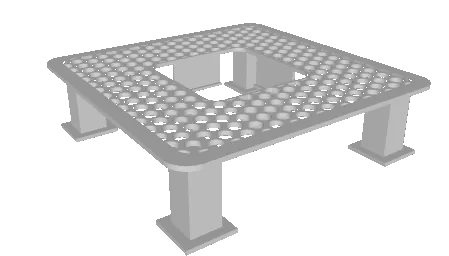
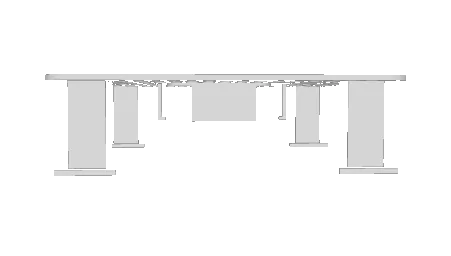
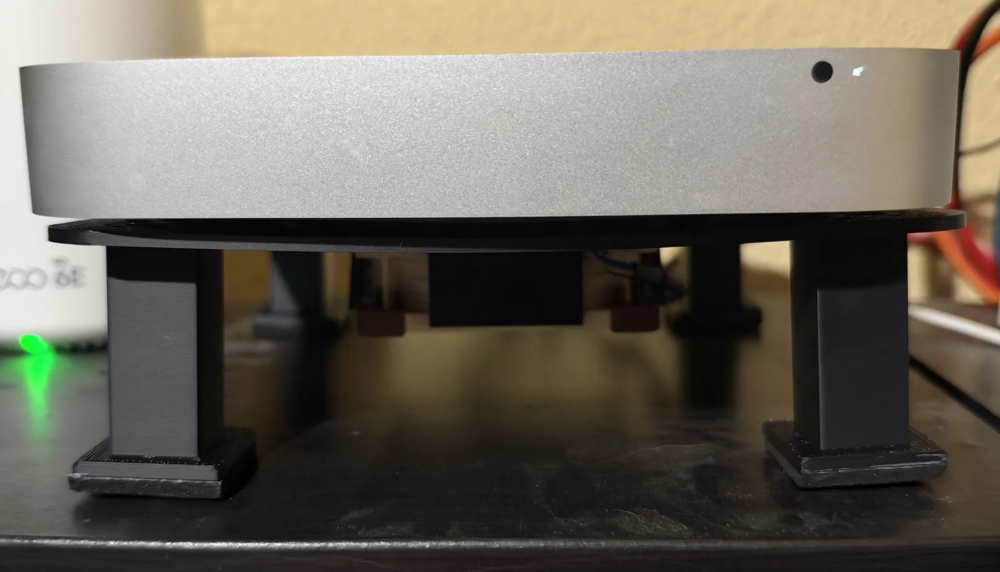
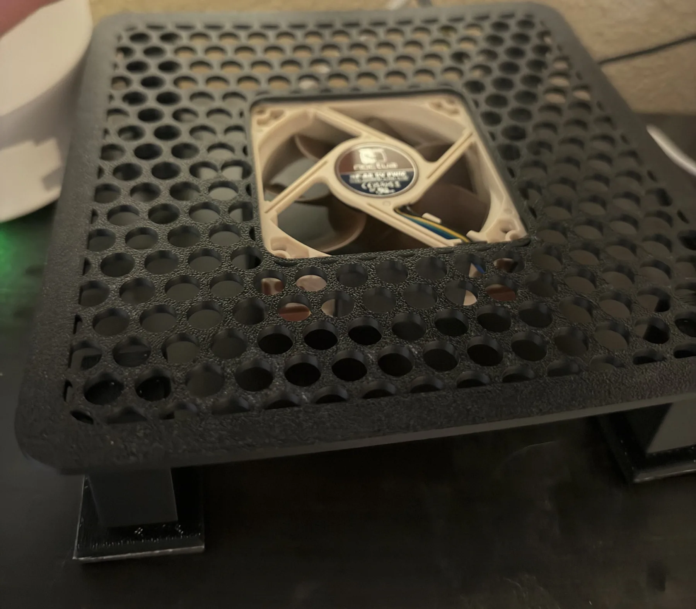

Base refrigeradora para el viejo Mac Mini.
En agosto desenterré un Mac Mini de 2012 (Macmini6,1) que tenía en un armario criando polvo. Es un modelo con un Intel Core i5 al que en su día le metí 16 GB de RAM (lo compré a Apple con el mínimo y después le puse memoria compatible).
Lo dejé de usar porque fallaba bastante y estaba muy lento para varias cosas, así que acabó desenchufao y en el armario que comentaba hace un momento.
Un día se me iluminó la bombilla: ¿y si le meto un Ubuntu Server, monto ahí los contenedores de Docker que ando encendiendo y apagando a mano en el PC y, de paso, quito el Pi-hole que tenía en una Raspberry Pi y lo unifico todo? Y a ello me fui.
Primeros problemas
Ubuntu suele instalarse en un momento desde un USB, pero aquí tardó 35 minutos. Ese ya debería haber sido el dato clave para darme cuenta de que el disco original estaba hecho un desastre. Tras un par de reinicios, solo arrancaba directamente en modo de error de escritura. Así que compré un SSD de 480 GB compatible y, gracias a mi buen amigo Roge (gracias, majérrimo), lo pudimos cambiar. Ya de paso le dimos una limpieza de polvo a los ventiladores y demás, que le venía de perlas.
Instalación definitiva
A la segunda fue todo increíblemente rápido: formateo e instalación de Ubuntu en no más de diez minutos en total. Me había hecho scripts de lo poco que había podido instalar la primera vez y los pude aprovechar.
Empecé poniendo contenedores para Pi-hole, aMule, Jackett y varias cosas que necesitaba de vez en cuando. Ahora podía configurarlo todo bien y encender y apagar bajo demanda, sin tener la Raspberry Pi o mi PC encendidos todo el día.
Poco a poco me fui viniendo arriba y acabé con un montón de cosas más que no sabía que necesitaba y que ahora adoro.
Los problemas nunca vienen solos
Una de esas cosas fue la galería de fotos. Quería que los móviles de la familia no tuvieran que guardar miles de fotos antiguas, pero que desde casa (por la wifi o por VPN) pudiéramos ver cualquiera de ellas casi como si estuviera en el PC. El NAS de Synology que tengo es casi de juguete, con 256 MB de RAM, y no da para muchas aplicaciones, así que le metí al servidor un contenedor con Immich para gestionar los álbumes y las copias de los teléfonos.
Pero indexar fotos le cuesta mucho al Mac Mini: generar miniaturas, analizar las imágenes y extraer metadatos son muchos procesos en paralelo. Durante la carga inicial estuvo varios días con la CPU cerca del 100 % y tirando de RAM a saco.
Ahí vi que el Mac Mini se calentaba mucho y que el pequeño ventilador silencioso que trae no daba abasto. Había que echarle una mano.
Busqué bases refrigeradoras y ninguna me convencía. Unas eran súper aparatosas y ruidosas, y otras, mucho más grandes o más pequeñas que el Mac Mini (con un modelo de 2012, encontrar algo que encajara justo era complicado). Me rendí de buscar, pero si Mahoma no va a la montaña, la montaña debería ir a Mahoma.
La solución
Tirando de Claude y aprovechando que las medidas del Mac Mini son públicas, le pedí diseñar una base a medida. Tenía que sujetar el Mac, dejar pasar el aire por debajo (que es por donde lo toma) y no estorbar la salida de atrás. Y, a la vez, sujetar un ventilador de 80 mm potente pero silencioso, de los que se alimentan por USB a 5 V, que empujara aire fresco desde abajo y le ayudara a respirar.
Y así fue. Tras un par de iteraciones conseguí un diseño que deja sacar los cables del ventilador sin que tropiecen con nada y que lo sujeta para que no vibre ni se caiga, todo con el Mac Mini reposando encima.


No tengo impresora 3D (de momento), pero lo llevé a una tienda maravillosa de Oviedo y me lo imprimieron en nada de tiempo. Me trataron súper bien, así que os la recomiendo si os pilla cerca.
Os comparto el diseño por si os encaja o por si lo queréis usar como referencia para otro modelo. Está subido a Printables con licencia CC BY-NC.
Que se encienda solo
Obviamente, el ventilador no podía estar encendido siempre ni depender de que yo me acordara de encenderlo. La siguiente pieza fue un relé wifi USB y un pequeño programa que decide cuándo tiene que girar. Eso da para un artículo propio, así que te lo cuento con detalle en la segunda parte.
Por qué compensa
Tal vez no tengas el mismo modelo que yo, tal vez no tengas impresora (yo tampoco), pero hoy en día eso no es un impedimento. Con un poco de ayuda y algo de tiempo libre (fue un verano de cacharreo y de aprendizajes súper interesantes) se pueden hacer maravillas. Si tienes otro aparato al que le pasa algo parecido, puedes usar esta guía, o parte de ella, para pelotear con tu agente de IA favorito y buscar alternativas.
El límite es el cielo (en realidad es el espacio físico en casa, de ahí lo de no tener impresora).

